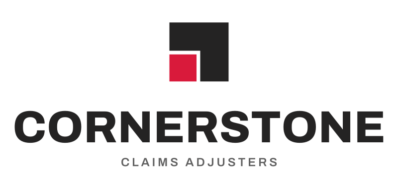
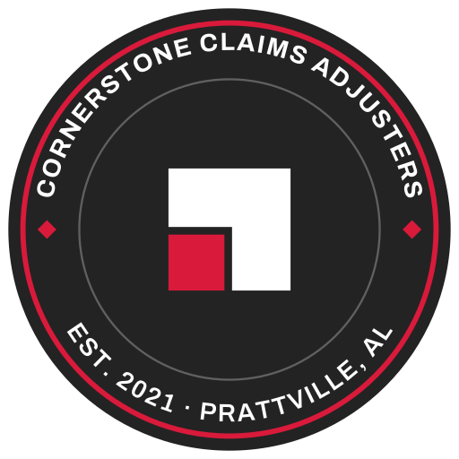
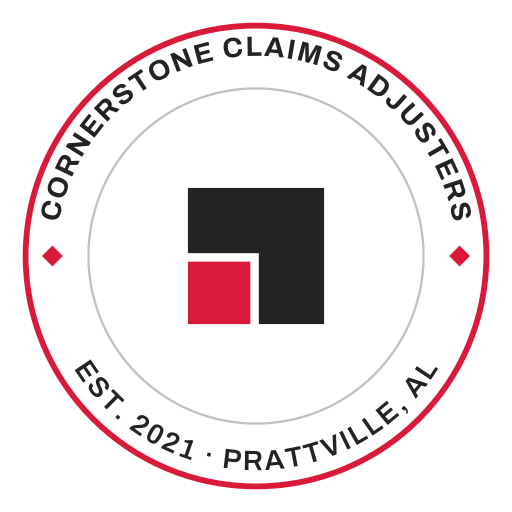
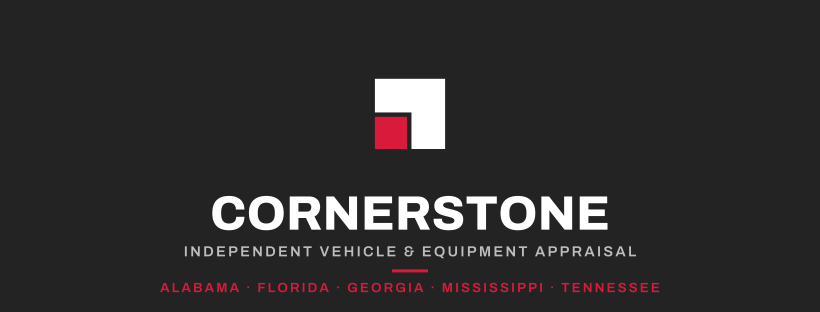
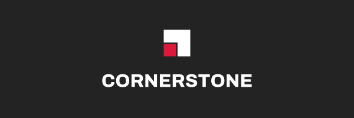

Which file do I use?
The short answer for the things you will actually do.
| When you are doing this | Use this file | Format |
|---|---|---|
| Email signature | email-signature-320.png | PNG · 320px wide |
| Word, Google Docs, PDFs | cornerstone-logo-horizontal-1200.png | PNG · 1200px wide |
| Letterhead & printed reports | cornerstone-logo-horizontal.pdf | PDF · vector |
| Sign shop, vehicle wrap, embroidery | cornerstone-logo-horizontal.svg | SVG · vector |
| Website favicon | cornerstone-mark-32.png | PNG · 32px |
| Social profile picture | social-profile-light-1000.png | PNG · 1000×1000 |
| LinkedIn banner | linkedin-banner-1584x396.png | PNG · 1584×396 |
| Facebook cover | facebook-cover-820x312.png | PNG · 820×312 |
| Email newsletter header | email-header-600x200.png | PNG · 600×200 |
| Shirts, hats, truck doors, stamps | cornerstone-badge.svg | SVG · vector |
{kind=link}
{kind=link}
{kind=link}
{kind=link}
{kind=link}
{kind=link}
{kind=link}
{kind=link}
{kind=link}
All the files
Dark versions are for white and light backgrounds. The “reversed” versions are for charcoal, photographs and dark colours. One-colour versions are for engraving, stamps and single-colour printing.
The logo
The full lockup. This is the default choice.
{kind=link}
{kind=link}
Horizontal — reversed
{kind=link}
{kind=link}
{kind=link}
{kind=link}
One-colour version — vector only
Horizontal — one colour
{kind=link}
Compact & stacked
For tight spaces, or when the shape needs to be squarer.
Compact — no tagline
{kind=link}
{kind=link}
{kind=link}
Compact — reversed
{kind=link}
{kind=link}
{kind=link}

Stacked
{kind=link}
{kind=link}
{kind=link}

Stacked — reversed
{kind=link}
{kind=link}
{kind=link}
The mark on its own
Use where the name is already obvious, or where the space is square.
Mark
{kind=link}
{kind=link}
{kind=link}
{kind=link}
{kind=link}
{kind=link}
{kind=link}
{kind=link}
{kind=link}
{kind=link}
Mark — reversed
{kind=link}
{kind=link}
{kind=link}
{kind=link}
One-colour version — vector only
Mark — one colour
{kind=link}
The field badge
Round format for embroidery, vehicle doors and report stamps.

Badge
{kind=link}
{kind=link}
{kind=link}

Badge — reversed
{kind=link}
{kind=link}
{kind=link}
Ready-made pieces
Sized correctly for each platform. Upload as they are.
LinkedIn banner
{kind=link}

Facebook cover
{kind=link}

Email header
{kind=link}
Social profile — light
{kind=link}
Social profile — dark
{kind=link}
{kind=link}
Your colours
Give these codes to anyone printing or building something for you.
Cornerstone Red
#D91A3BLogo, buttons, highlightsDeep Red
#A8142EHover and pressed statesCharcoal
#242323Text and dark backgroundsWarm Grey
#8C8784Dividers and quiet detail — not body textPaper
#F4F2EFPage backgroundsYour fonts
Both are free for business use, including on vehicles, signage and printed reports. They are in the
download, in the fonts folder.
Archivo
Headings, the logo, buttons and figures.
- Install it: double-click
Archivo-Variable.ttfand choose Install. On Windows, right-click and choose “Install for all users.” - If you cannot install fonts on a machine, use Arial Bold in its place.
Inter
Body text, letters, reports and email.
- Install it: same as above, using
Inter-Variable.ttf. - If you cannot install fonts, use Arial or Calibri in its place.
A few rules
Nothing fussy — these just keep the logo looking like itself.
Please do
- Leave clear space around the logo, at least the height of the red square, on every side.
- Use the reversed version on dark backgrounds and photographs.
- Send the SVG or PDF to sign makers, embroiderers and printers.
- Use the mark on its own when the space is square or very small.
Please don't
- Stretch, squash or rotate it.
- Change the colours, or add shadows, glows or outlines.
- Put the dark logo on a dark background, or the reversed one on white.
- Rebuild it in Word or Canva, or scale a small PNG up — it will go blurry.
- Use the horizontal logo smaller than about 24px tall on screen, or 0.3 inch in print.